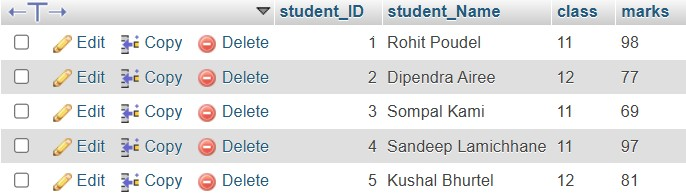

Chapter 1: Database Management System
Data
Data refers to raw facts, figures, and statistics that have not yet been processed. It forms the foundation for information, which can be interpreted and analyzed.Information
Information is processed data that is meaningful and useful to the user. It involves interpretation, context, and relevance.Features of Information
The key features of information include accuracy, completeness, timeliness, relevance, and clarity. Information must be correct and relevant to be useful.Database and its Purpose
A database is an organized collection of data that is easily accessible, managed, and updated. Its purpose is to store, retrieve, and manipulate data efficiently.Terminologies in Database
- Table: A collection of data organized in rows and columns.
- Field: A single piece of data or attribute in a table (e.g., name, age, address).
- Record: A complete set of information (a row) in a table, containing multiple fields.
- Tuple: A synonym for record in relational database systems.
- Object: An entity in a database that can be manipulated and interacted with, like tables, views, and queries.
- Keys: Unique identifiers used to access and organize data in the database (e.g., primary key, foreign key).
Data Dictionary
A data dictionary is a repository of metadata that defines the structure, relationships, and constraints of the data in a database.Database Management System (DBMS)
- Introduction: A DBMS is software used to manage and manipulate databases, providing an interface for users to interact with the database.
- Objectives: The main objectives of a DBMS include data integrity, data security, concurrent access, and ease of data manipulation.
- Advantages: Some advantages include improved data consistency, efficient data retrieval, and better security control.
- Disadvantages: Disadvantages include the cost of DBMS software, complexity in implementation, and the need for skilled personnel.
Types of Database Models
- Hierarchical: A database model that organizes data in a tree-like structure with parent-child relationships.
- Network: A more flexible model compared to hierarchical, where multiple relationships between records are allowed.
- Relational: A database model that stores data in tables and defines relationships between them using keys (most widely used today).
- Entity Relational: A model that represents data in terms of entities and the relationships between them, often used in object-oriented databases.
Integrity Constraints and Types
- Domain: Ensures that a field contains only valid values, as defined by the domain (e.g., integer, string).
- Entity: Ensures that each record in a table is unique and identifiable by a primary key.
- Referential: Ensures that relationships between tables are consistent, typically enforced by foreign keys.
Keys
Keys are used to identify and access data in a database efficiently. Types of keys include primary keys, foreign keys, and candidate keys.Normalization
- Introduction: Normalization is the process of organizing the data in the database to reduce redundancy and improve data integrity.
- Normal Forms: Normal forms are stages in normalization where data is divided into smaller tables based on rules to minimize duplication.
- 1NF, 2NF, 3NF: These are the first three normal forms, which reduce redundancy and improve data relationships in a database.
- Advantages: It leads to less data redundancy, improved data consistency, and easier updates and maintenance.
- Disadvantages: It can lead to complex queries and performance issues when data is too fragmented.
Centralized and Distributed Database
- Introduction: Centralized databases store all data in a single location, while distributed databases spread data across multiple locations.
- Advantages: Centralized databases are easier to maintain, while distributed databases provide better performance and fault tolerance.
- Disadvantages: Centralized databases can be a single point of failure, whereas distributed systems can be more complex to manage.
- Comparison: Centralized systems are ideal for smaller, simpler applications, while distributed systems excel in large, complex environments requiring scalability and reliability.
Database Security
- Introduction: Database security involves protecting databases from unauthorized access, corruption, or loss of data.
- Challenges: Security challenges include unauthorized access, data breaches, and ensuring data privacy.
- Security Measures: These include encryption, access controls, firewalls, and regular backups.
- Roles of DBA: The Database Administrator (DBA) is responsible for database security, performance tuning, backup, and user management.
Class 12 Practical Topics
- DDL and DML Languages: DDL (Data Definition Language) is used to define database structures (e.g., CREATE, ALTER), while DML (Data Manipulation Language) is used to query and modify data (e.g., SELECT, INSERT, UPDATE, DELETE).
- SQL DataTypes:
- CHAR: A fixed-length character string.
- VARCHAR: A variable-length character string.
- BINARY: Stores binary data, such as images or files.
- VARBINARY: A variable-length binary data type.
- TINYBLOB: A small binary large object.
- TINYTEXT: A small text field.
- TEXT: A text data type for long strings of text.
- LONGTEXT: A data type for extremely large text fields.
- ENUM: A data type that allows one value from a list of predefined options.
- BIT: A data type that stores binary data (0 or 1).
- TINY INT: A small integer data type.
- BOOLEAN: Stores Boolean values (true/false).
- INTEGER: A standard integer data type.
- FLOAT: A floating-point number with decimal precision.
- DOUBLE: A double-precision floating-point number.
- DECIMAL: A precise numeric data type for fixed-point numbers.
- DATE: Stores date values (year, month, day).
- DATETIME: Stores both date and time values.
Questions:
1. What is Database and DBMS? List out the advantages and disadvantages of DBMS.
-> A database is an organized collection of related data that can be easily accessed, managed, and updated. A Database Management System (DBMS) is software that allows users to efficiently store, retrieve, manipulate, and manage data in a database.
Its advantages are:
- Data Redundancy Control: Reduces duplication of data by centralizing storage.
- Data Consistency: Updates in one place automatically reflect across the system.
- Data Sharing: Multiple users can access the same data simultaneously.
- Data Security: Access to data can be restricted using authentication and permissions.
- Backup and Recovery:Data can be backed up and recovered in case of system failure.
- Cost: Expensive to purchase, install, and maintain.
- Complexity: Requires skilled professionals to manage and operate.
- Hardware Requiremnts: Needs high-performance hardware, especially for large databases.
- Performance: Slower than file-based systems in simple or small-scale applications.
- Risk of Data Loss:If not backed up properly, data may be lost due to software or hardware failure.
2.Differentiate between file processing system and DBMS. Give at least four points.
-> The differences are:
| File Processing System | DBMS |
|---|---|
| Data is stored in separate files for each application. | Data is stored centrally in a single database. |
| High data redundancy due to duplicate data in multiple files | Reduces data redundancy by storing data in one place. |
| Difficult to maintain data consistency. | Ensures data consistency automatically. |
| Limited data security, handled by the application itself. | Provides strong security features like access control. |
3.Explain the different models of DBMS with advantages and disadvantages.
-> There are several types of DBMS data models that define how data is organized, stored, and accessed. The most common models are:
- Hierarchical Model: In this model, data is organized in a tree-like structure with a parent-child relationship. Each child has only one parent, but a parent can have multiple children.
Advantages:
- Simple and easy to understand.
- Quick data access for hierarchical relationships.
- Good for representing one-to-many relationships (like file systems).
Disadvantages:
- Not flexible; difficult to reorganize.
- Redundant data if a child needs multiple parents.
- Complex to maintain if relationships change.
- Network Model: This model allows many-to-many relationships using a graph structure. A record can have multiple parent and child records.
- More flexible than the hierarchical model.
- Better performance for complex relationships.
- Supports many-to-many relationships.
- Complex structure makes it hard to design and maintain.
- Difficult to understand and use for beginners.
- Requires complex navigational commands.
- Relational Model: Data is stored in tables (relations) consisting of rows and columns. Each table represents one entity, and relationships are managed using keys (primary and foreign keys).
- Easy to use and understand.
- High flexibility with SQL support.
- Reduces data redundancy using normalization.
- Slower for very large or complex data compared to other models.
- Requires more storage and processing.
- Can be inefficient for highly hierarchical or networked data.
Advantages:
Disadvantages:
Advantages:
Disadvantages:
4. What is a relational database? How is it different from other database models?
-> A relational database is a type of database that stores data in the form of tables, also called relations. Each table consists of rows (also known as records or tuples) and columns (also called fields or attributes). Each table usually represents one entity, such as students, employees, or products. The tables are connected to each other using primary keys (a unique identifier for each row) and foreign keys (which reference primary keys in other tables). This structure makes it easy to organize and relate data without duplication. Relational databases use Structured Query Language (SQL) to insert, update, delete, and retrieve data. Popular relational database systems include MySQL, Oracle, PostgreSQL, and Microsoft SQL Server.
Relational databases differ from other database models like hierarchical, network, and object-oriented in terms of structure, flexibility, and ease of use. In a relational model, data is stored in separate tables and linked using keys, which makes it highly flexible and easy to modify or scale. In contrast, hierarchical databases store data in a tree-like structure, where each record has only one parent, making it rigid and less adaptable. Network models allow more complex relationships but are harder to design and maintain because of their graph-like structure. Object-oriented models store data as objects (like in programming), which is useful for handling complex data types but is more complex and less widely supported. Relational databases stand out due to their simplicity, consistency, and wide use of SQL, making them the most common choice in modern applications.
5.What is data redundancy? How does DBMS help in reducing it?
-> Data redundancy means storing the same data in multiple places, leading to wasted space and possible inconsistencies. For example, if a student's address is saved in several files, updating it everywhere becomes difficult and error-prone.
A DBMS reduces data redundancy by storing data in a centralized way using tables linked through keys. Instead of repeating the same data, it is stored once and shared across related tables. This improves storage efficiency and keeps data consistent.
6. Write differentiate between centralized and distributed database systems.
-> The differences are:
| Centralized Database System | Distributed Database System |
|---|---|
| All data is stored and managed at a single central site. | Data is stored across multiple sites or locations connected via a network. |
| Controlled by a single central authority. | Control is distributed among multiple sites. |
| Faster access locally but slower for remote users. | Can provide faster local access by storing data near users. |
| Usually lower initial cost due to centralized resources. | Higher cost due to multiple hardware and network requirements. |
| Simpler to design and manage. | More complex due to data distribution and synchronization. |
7.Who is Database Administrator (DBA)? What are the major responsibilities of DBA?
-> A Database Administrator (DBA) is a professional responsible for managing and maintaining a database system. The DBA ensures that the database is available, secure, and running efficiently. They act as the key person who controls access to the database, monitors its performance, and handles any issues related to data storage and retrieval.
The main responsibilities of a DBA include installing and configuring the database software, creating and maintaining database structures, ensuring data security and privacy, performing regular backups and recovery, monitoring database performance, tuning the system for optimal speed, managing user access and permissions, and troubleshooting any database-related problems to ensure smooth operation.
8. Define normalization. Explain 1NF, 2NF and 3NF with suitable examples. Explain the normalization process with examples.
-> Normalization is a process in database design used to organize data to reduce redundancy and improve data integrity. It involves dividing large tables into smaller, related tables and defining relationships between them.
1NF (First Normal Form): Data is in tabular form with atomic (indivisible) values.
Example before 1NF: Courses = "Math, Science"
After 1NF:
StudentID | Name | Course
101 | Ram | Math
101 | Ram | Science
2NF (Second Normal Form): 1NF + no partial dependency. Non-key attributes must depend on the whole primary key.
Split student info from course info.
3NF (Third Normal Form): 2NF + no transitive dependency. All attributes depend only on the primary key.
Separate instructor details into a new table.
9. Explain the terms: primary key, foreign key, and candidate key with examples.
-> Primary Key: A unique identifier for each record in a table. Example: StudentID in Students table.
Foreign Key: A field in one table that refers to the primary key in another. Example: StudentID in Enrollments refers to Students table.
Candidate Key: A column or set of columns that can uniquely identify a record. Example: Both StudentID and Email can be candidate keys, but only one becomes the primary key.
10. What is SQL? Explain its components and common functions.
-> SQL (Structured Query Language) is a standard programming language used to manage and manipulate relational databases. It allows users to create, read, update, and delete data using commands.
Components of SQL:
- DDL (Data Definition Language): Used to define structure (e.g., CREATE, ALTER, DROP).
- DML (Data Manipulation Language): Used to manage data (e.g., SELECT, INSERT, UPDATE, DELETE).
- DCL (Data Control Language): Used to control access (e.g., GRANT, REVOKE).
- TCL (Transaction Control Language): Used to manage transactions (e.g., COMMIT, ROLLBACK).
Common SQL Functions:
- Aggregate Functions: COUNT(), SUM(), AVG(), MAX(), MIN()
- String Functions: CONCAT(), LENGTH(), LOWER(), UPPER()
- Date Functions: NOW(), CURDATE(), DATE_ADD()
11. SQL Example:
- Create a table named students with the fields: Id, Name, Class, and Marks.

- Insert records into the students table with appropriate values.
- Display all records from the students table. 
- Update the marks of a student whose name is 'Anita' to 85.
- Delete the record of the student with id = 3.
12. Define the following terms.
- a. Data Dictionary: A data dictionary is a collection of metadata that describes the structure of the database, including information about tables, fields, data types, relationships, and constraints.
- b. Primary Key: A primary key is a field (or combination of fields) in a table that uniquely identifies each record in that table. It must contain unique values and cannot have NULLs.
- c. Relationship: A relationship is a logical connection between two or more tables in a database, typically established using keys (primary and foreign).
- d. Data Manipulation Language (DML): DML is a subset of SQL used for managing data within tables. Common DML commands include SELECT, INSERT, UPDATE, and DELETE.
- e. Structured Query Language (SQL): SQL is a standard programming language used for managing and manipulating relational databases through commands such as CREATE, SELECT, INSERT, and DELETE.
- f. Data Integrity: Data integrity refers to the accuracy, consistency, and reliability of data throughout its lifecycle. It ensures that the data stored is correct and valid.
- g. Data Definition Language (DDL): DDL is a subset of SQL used to define and modify database structures such as tables, indexes, and schemas. Common DDL commands include CREATE, ALTER, and DROP.
- h. Data Security: Data security involves protecting data from unauthorized access, corruption, or theft. It includes measures like authentication, encryption, and access control.
- i. Database System: A database system consists of the database, the DBMS software, and the applications and users interacting with the data. It is designed to efficiently store, manage, and retrieve data.